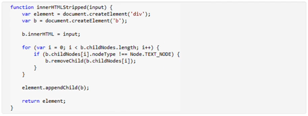
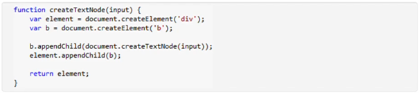
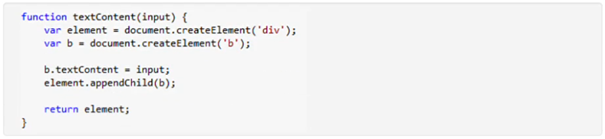
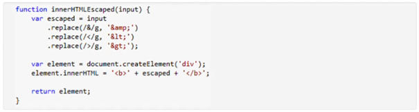
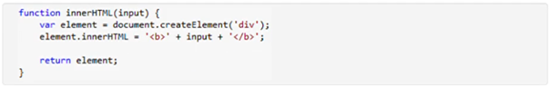

Assuming the following produces elements on the page based
on input from an untrusted source - for example,
a query string ?input=...-which of these functions do not
create a potential XSS vulnerability?
1. ✅ 
2. ✅ 
3. ✅ 
4. 
5. 
Please select all correct answers (one or multiple)